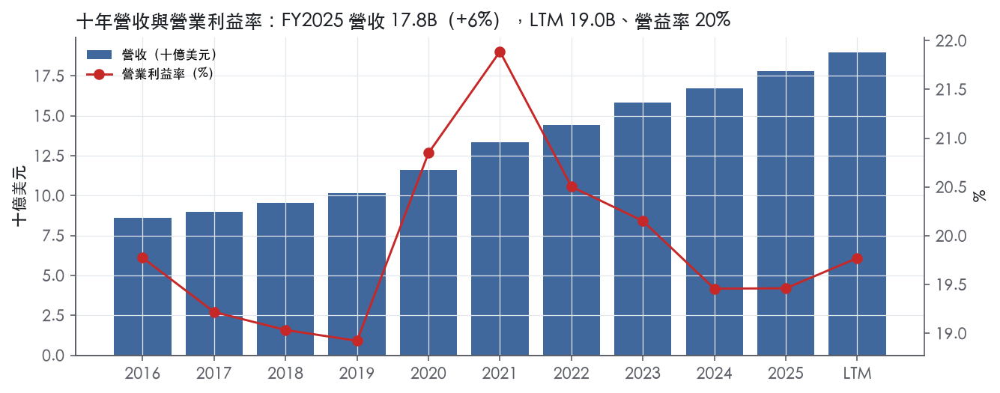
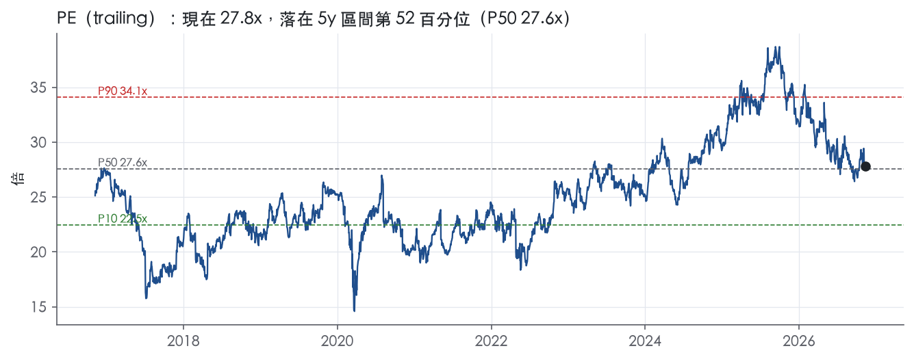
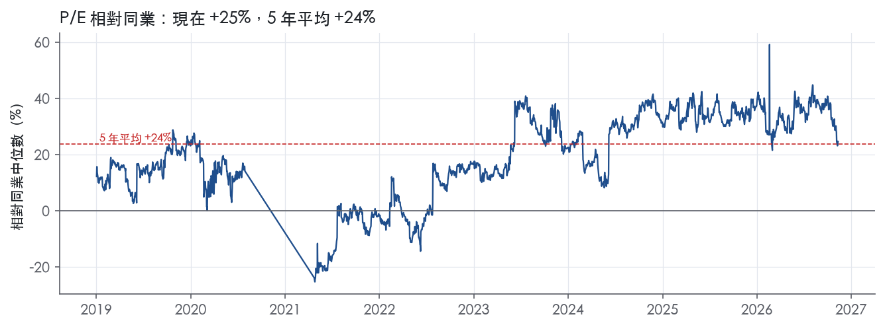
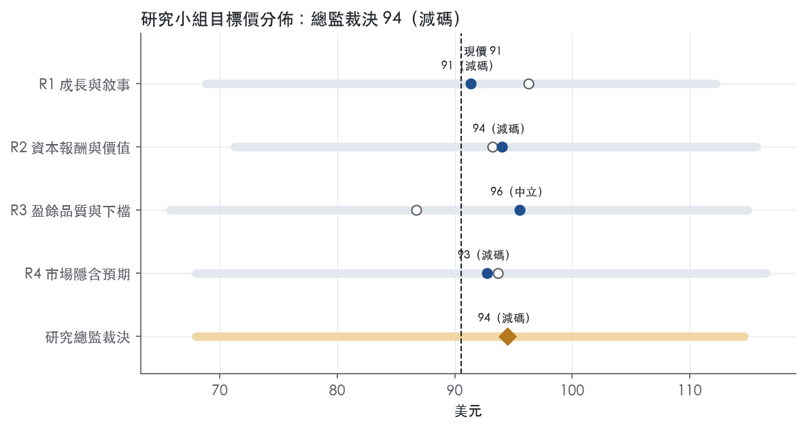
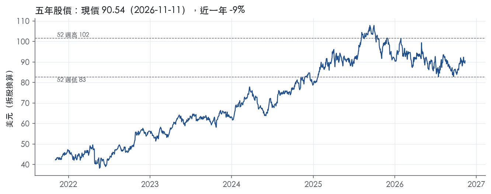

評等總表 › 非必需消費 › ORLY
降速已入價，24x 前瞻 P/E 中性｜評等 減碼｜目標價 94
| 報告日 | 評等 | 目標價 | 當時股價 | 超額報酬 |
|---|---|---|---|---|
| 2026-11-11 | 減碼 | 94.46 | 90.54 | -5.6% |
| 2026-10-30 | 減碼 | 88.59 | 88.12 | -9.4% |
| 評等 | 減碼（邊界，鄰近中立） |
| 12 個月目標價 | 94 美元 |
| 現價 | 90.54 美元（2026-11-11） |
| 預期報酬 | 股價 +4.3%＋股息 0.0%＝總報酬 +4.3%；同業籃門檻 9.9%，超額 -5.6% |
| 估值方法 | P/E 24.0x，套在第 5–8 季的EPS（也就是一年後的未來四季） |
| 三情境 | 熊 68／基準 96／牛 115 |
| 研究流程 | 四位研究員兩輪辯論＋研究總監裁決 |
| 資料來源 | SEC EDGAR XBRL、Tiingo、FRED（全免費） |
降速已入價，24x 前瞻 P/E 中性（研究總監裁決，四位研究員兩輪辯論後）
評等 減碼（邊界，鄰近中立）｜12 個月目標價 94 美元（總監三情境機率加權 96 與研究員中位數 93 各半）｜現價 90.54（2026-11-11）
預期報酬：股價 +4.3%＋股息 0.0%＝總報酬 +4.3%。同業籃門檻 9.9%，超額 -5.6%，離中立的分界不到三個百分點，屬邊界評等（落在其他級距的機率約五成）。
估值方法：P/E 24.0x，套在第 5–8 季的EPS（也就是一年後的未來四季）。三情境：熊 68（20%）／基準 96（53%）／牛 115（27%）。
立場中性而評等減碼：評等看的是「預期總報酬 4.3% − 同業籃門檻 9.9%」＝超額 -5.6%，不是絕對漲跌；中性但超額偏離門檻，代表情境機率或股利把報酬推離門檻。
評等說明：研究總監自己的機率加權目標價 96 美元對應「中立」；與研究員第二輪中位數 93 美元各半後為 94 美元，落入「減碼」。兩者只差一級，請把這檔讀成「中立～減碼」，正文裡總監的立場文字以「中立」寫成。
什麼會讓研究總監改變看法：FY2026Q4 同店 ≥6% 且 FY2027 同店指引中點 ≥5%，倍數上移到 P75 以上、立場轉多；FY2026Q4 營益率低於 18.8% 或 FY2027Q1 同店低於 3%，營益率改 R2 路徑、倍數降到 23x，立場轉空。
| 過去四季（實際，FY2026Q3） | 未來四季 | 第 5–8 季 | 第 9–12 季 | |
|---|---|---|---|---|
| 營收（B） | 19.0B | 20.1B | 21.4B | 22.7B |
| 營收成長 | 8.7% | 6.0% | 6.5% | 6.0% |
| 營業利益率 | 19.8% | 19.6% | 19.8% | 19.8% |
| EPS（美元） | 3.26 | 3.56 | 4.01 | 4.44 |
| EPS 成長 | 13.3% | 9.4% | 12.5% | 10.9% |
| 每股股息（美元） | — | 0.00 | 0.00 | 0.00 |
| P/E（現價） | 27.8x | 25.4x | 22.6x | 20.4x |
| 股息殖利率（現價） | — | — | — | — |
過去四季為申報數字；預測為研究總監的假設、程式計算。倍數與殖利率都用現價計算，用來看現價對應各期獲利的高低。
| 項目 | 上次（2026-11-01） | 這次（2026-11-12） | 變動 |
|---|---|---|---|
| 評等 | 減碼 | 減碼 | ＝ |
| 機率加權目標價（美元） | 89 | 94 | +6.6% |
| 超額報酬 | -9.4% | -5.6% | +3.9 pp |
| 目標倍數 | 23.5x | 24x | — |
| 未來四季營收成長 | 6.8% | 6.0% | -0.8 pp |
| 未來四季營益率 | 19.9% | 19.6% | -0.3 pp |
| 未來四季 EPS（美元） | 3.51 | 3.56 | +1.7% |
| 熊／基準／牛機率 | 22／50／28 | 20／53／27 | — |
程式計算；「未來四季」各自從當次報告的資料起點算。研究總監逐點說明見第八章「與上次報告比較」。
| 情境 | 機率（歷史） | 故事 | 未來四季營收成長 | 第 5–8 季營益率 | 倍數 | 目標價 | 股價漲跌 |
|---|---|---|---|---|---|---|---|
| 熊 | 20%（20%） | 風險表第 1 條同店 <3%、第 2 條退款消失後毛利率跌破 51.6%，本行下行路徑觸發第 4 條舉債回購減速，倍數落前瞻帶 P25–P50 | 4.0% | 18.6% | 19.5x | 68 | -24.9% |
| 基準 | 53%（52%） | Q4 依指引降速、2027 高基期下同店中低個位數加展店，營益率扣退款後 19.6% 再回 19.8%，回購 −4.0%，倍數與市場持平只差 1% | 6.0% | 19.8% | 24.0x | 96 | 6.3% |
| 牛 | 27%（28%） | Q4 同店超過指引上緣、AAP 持續讓出專業端份額、上行路徑 WTI 72 帶動 DIY，回購不放慢，倍數回前瞻帶 P75–P90 | 8.5% | 20.3% | 26.5x | 115 | 26.6% |
目標價由程式依研究總監的驅動與倍數計算；機率由研究總監給定。括號內是歷史頻率：把這檔股票過去十年 12 個月報酬的波動形狀，置中在基準情境，結果落在各情境附近的比例。
四位研究員用不同方法各自估值，回應研究總監的質疑後交出第二輪，最後由總監逐點裁決。各研究員的主張見第七章，裁決理由見第八章，完整論證見《研究底稿》。
| 立場（一輪→二輪） | 加權目標價（一輪→二輪） | 評等（一輪→二輪） | 第二輪倍數 | 熊～牛目標價 | |
|---|---|---|---|---|---|
| R1 成長與敘事 | 中性→中性 | 96→91 | 中立→減碼 | 23.0x | 69～112 |
| R2 資本報酬與價值 | 看空→看空 | 93→94 | 減碼→減碼 | 26.0x | 71～116 |
| R3 盈餘品質與下檔 | 中性→中性 | 87→96 | 減碼→中立 | 24.0x | 66～115 |
| R4 市場隱含預期 | 看空→看空 | 94→93 | 減碼→減碼 | 23.5x | 68～116 |
| 研究總監裁決 | 中性 | 94 | 減碼 | 24.0x | 68～115 |
目標價由程式依各自的驅動與倍數計算；評等＝機率加權總報酬 − 同業籃門檻。
O'Reilly是北美最大的汽車後市場零件、工具、用品、裝備與配件專業零售商之一，同時服務DIY（自行維修）與專業維修廠（professional service provider）兩種客戶，稱為「雙市場策略」¹。公司1957年由O'Reilly家族創立於密蘇里州Springfield，1993年4月起在Nasdaq以ORLY掛牌¹。截至2025年12月31日，公司在美國48州與波多黎各經營6,447家門店，另在墨西哥112家、加拿大26家¹；截至2026年9月30日，門店總數已增至6,758家，涵蓋美國48州、波多黎各、墨西哥與加拿大²。公司不賣輪胎，也不提供付費維修或安裝服務¹。2025年DIY與專業客戶各約佔銷售的50%¹。這是一家靠規模、鋪點密度與零件可得性建立護城河的零售商，而非技術驅動型公司。
O'Reilly不依產品線或地理區拆分財報分部，10-K未揭露分部別營收佔比。公司產品線包括新品與再製的汽車硬零件與保養品項（如交流發電機、電池、刹車系統零件、皮帶、底盤零件、引擎零件、燃油泵、水管、起動器、溫控件、水泵、防凍液、外觀用品、引擎添加劑、濾芯、流體、照明、機油、雨刷），以及配件類如腳踏墊、座椅套、貨卡配件¹。門店同時提供電池診斷測試、電池/雨刷/燈泡更換、VeriScan故障碼檢測、刹車鼓與轉子車削等服務¹。公司銷售品牌涵蓋全國知名品牌（AC Delco、Bosch、Castrol、Mobil1、Valvoline等）與自有品牌（BrakeBest、Murray、Super-Start、MasterPro等），自有品牌橫跨「好、更好、最好」三個價位帶¹。公司向逾655家供應商採購，前五大供應商佔2025年總採購約23%，最大供應商約8%¹。公司估計美國汽車後市場總規模約435B美元，O'Reilly的美國可及市場約165B至175B美元，涵蓋專業維修零件批發與DIY零售¹。公司以32個配送中心（DC）與399家Hub門店構成分層配送網路，DC平均備貨逾156,000個SKU，Hub平均備貨63,000個SKU，部分市場Hub增強至約115,000個SKU，逾95%門店每日多次配送含週末¹。配送與門店擴張是公司資本投入最密集的兩個環節，決定了公司能否維持「同日到貨」的服務承諾，這是對抗AutoZone、Advance Auto Parts等對手的核心武器。
公司客戶結構清楚二分：DIY零售與專業維修廠批發，2025年各佔銷售約50%，且專業端歷史上成長速度快於DIY端，因其市場更分散、整併機會更大¹。公司配置約825名全職銷售人員專職服務專業客戶¹。地理分布高度集中於德州（13.3%門店佔比）、加州（9.2%）、佛州（4.8%）等大州，前十大州合計佔總門店數逾一半¹。國際布局有限，墨西哥112家、加拿大26家，2025年墨西哥淨增25家店為成長最快的國際市場¹。通路上公司主打全渠道策略：零售端有OReillyAuto.com網站與到店取貨/到府配送，專業端有OReillyPro.com平台與O'Reilly Pro手機App，提供本地配送¹。主要競爭對手包括AutoZone、Advance Auto Parts、NAPA、CARQUEST等全國連鎖，以及Walmart、Amazon等大型零售商與電商¹。公司幾乎沒有海外營收揭露，本質上是一家美國內需、區域密集型的零售商，國際擴張仍處早期階段。
FY2025Q4（2025年12月31日止）營收4.41B美元，年增7.8%，營業利益率18.8%，EPS 0.71（is/dv 資料包，ltm系列）（項下年度數據回推）。FY2026Q1營收4.56B美元，年增10.2%，營業利益率18.5%，EPS 0.72（資料包）。FY2026Q2（2026年6月30日止）營收較去年同期4.53B美元增加367M美元、增幅8%，至4.89B美元；毛利率51.4%持平；SG&A增8%至1.53B美元（佔營收31.3%）；營業利益增8%至986M美元（佔營收20.2%）；淨利增7%至715M美元；稀釋EPS增10%至0.86美元³。公司當季將全年可比店銷售指引上調至4%至6%，全年營收指引上調至18.9B至19.2B美元³。FY2026Q3（2026年9月30日止）營收較去年同期4.71B美元增加416M美元、增幅9%，至5.12B美元；毛利率升至52.4%（去年同期51.9%）；營業利益增13%至1.10B美元（佔營收21.4%）；淨利增8%至786M美元；稀釋EPS增14%至0.97美元，受益於第三季3,900萬美元關稅退款²。公司同時將全年可比店銷售指引再上調至5.5%至6.5%，全年毛利率指引上調至51.6%至52.1%，營業利益率指引上調至19.5%至20.0%，全年營收指引為19.0B至19.3B美元²。第三季可比店銷售增長7.2%，在去年同期5.6%基礎上疊加成兩年累計12.8%，且專業業務雙位數成長快於DIY中個位數成長²。連續四季營收與可比店銷售加速、毛利率同步改善，顯示公司在2026年持續從競爭對手手中搶市佔，而非單純靠開店推升營收。
公司列出的五大成長策略為：積極展店（2025年淨增207家店，2026年計劃淨增225至235家店）、既有門店同店銷售成長、選擇性併購（整併高度分散的汽車後市場產業）、持續優化店型與選址（2025年翻新或更新約700家店、遷址35家）、全渠道成長（整合線上研究與購買體驗，連結OReillyAuto.com、OReillyPro.com與行動應用）¹。公司強調其競爭優勢來自雙市場策略執行力、優異客戶服務、技術熟練的門店人員（Professional Parts People）、策略性分層配送網路，以及經驗豐富的管理團隊（「內部拔升」文化，自1993年掛牌以來連續33年營收與獲利創紀錄）¹。公司CEO Brad Beckham在2026年第三季法說中表示，成長來自雙邊市佔提升，「專業業務雙位數成長、DIY中個位數成長」，並將全年指引上調反映第三季強勢表現與關稅退款挹注²。公司同時持續執行大規模庫藏股計畫，2026年前九個月回購38.5百萬股、投入3.47B美元，累計自2011年計畫啟動以來回購15億股、投入31.02B美元²。整體而言，O'Reilly的成長引擎是「開店＋同店銷售＋併購」三線並進的傳統零售滾雪球模式，搭配高強度庫藏股撐EPS，而非技術或商業模式上的結構性突破。在關稅退款與運價正常化的順風下，2026年利潤率擴張能否延續到2027年，取決於同店銷售能否維持中高個位數成長。公司對專業市場的長期樂觀（更分散、更有整併空間）仍是其估值溢價的核心敘事。

O'Reilly 具備寬護城河，依據是兩項長期成立的條件：密集配送網路帶來的成本優勢，以及在低密度市場的效率規模。我們有把握未來 10 年以上 ROIC 仍高於資本成本。過去九年 ROIC 每一年都高於資本成本，利潤率波動很小，這兩點支撐寬評級。趨勢判為穩定而非變寬：ROIC 已從高點回落，自由現金流利潤率同步下滑，看不到護城河正在擴大的證據。
成本優勢是第一來源。公司經營 32 個 DC，門店通常可在當日或隔夜取得逾 156,000 個 SKU，其中許多是其他汽車零件零售商通常不備的難找品項¹。公司另有 399 家 Hub 門店，逾 95% 門店每天收到多次配送，週末也有配送¹。公司向逾 655 家供應商採購，前五大供應商約佔總採購 23%，最大一家約 8%¹。公司表示，主要靠供應商獎勵方案、採購量放大帶來的規模經濟與選擇性提前採購，抵銷商品成本上漲¹。新店依配送網路成群選址，目的是在管理、廣告與配送上取得規模經濟¹。這套網路需要數十年資本累積，新進者難以用同等成本複製同等的零件可得性。
效率規模是第二來源。公司表示，雙市場策略讓它能在人口稀疏地區開店，這些地區原本撐不起一家以零售為主的全國連鎖店¹。一個市場只容得下一家有獲利的大型零件店時，先進入者就擁有實質的在地壟斷，後來者進場不划算。
轉換成本屬於次要來源，證據偏弱。專業客戶使用公司自有的 OReillyPro.com 訂購平台與行動應用程式，並可取得門店管理工具與 Certified Auto Repair 方案¹。這些工具會把維修廠的日常作業綁在 O'Reilly 系統上，但維修廠同時向多家供應商叫貨的成本很低，所以只算加分項。
數字大致支持寬評級，但有兩處衝突。
衝突一：ROIC 本身波動大。 ROIC 標準差 14.4%，已從高點 73.7% 回落到 59.7%。我們維持寬評級，原因是波動全部發生在遠高於資本成本的區間，即使回到十年低點，超額報酬仍然很厚。
衝突二：FCF 利潤率走弱。 FCF 利潤率最新值 9.0%，正好是十年最低，十年平均為 13.9%。公司自承雙市場策略需要大量資本投入配送與門店網路，也需要維持庫存的營運資金¹。我們把這解讀為護城河的維護成本上升，所以趨勢只給「穩定」，不給「變寬」。
ROE 因股東權益為負而失真，最新值 -237.8%，不納入判斷。
最大威脅是線上通路壓縮 DIY 端的價差。公司把 Wal-Mart 與 Amazon 列為競爭者¹。DIY 約佔 2025 年銷售 50%¹。比較標準化的保養品項最容易被電商比價，硬零件靠即時可得性與門市專業建議，相對防禦得住。
第二是人口密集市場的競爭。公司承認在人口較密集的市場持續面對激烈競爭¹。AutoZone 若持續加碼大都會區的 Hub 與配送，O'Reilly 的可得性差距會收斂。
第三是長期車輛結構轉向電動車。電動車的保養與硬零件需求較少，會慢慢削弱現有 SKU 組合的價值，不過這屬於十年以上的慢變數。
第四是資本配置。公司把負債增加列為風險因素之一¹。如果高強度回購持續推高槓桿，景氣下行時再投資配送網路的彈性會縮小。
目標倍數應相對汽車後市場零售同業給予溢價，理由是超額報酬的厚度與利潤率的穩定度都在同業前段。現行 P/E 27.8x，接近 5 年中位數 27.6x，所以溢價應以公司自身歷史中樞為上限，不宜再往上擴張。FCF 利潤率處於十年低點，估值研究員應以 EV/EBITA 為主錨，並在 FCF 基礎的模型中對資本密集度上升做保守假設。
| 指標 | 最新 | 十年平均 | 標準差 | 最低 | 最高 |
|---|---|---|---|---|---|
| ROIC | 59.7% | 54.5% | 14.4% | 34.4% | 73.7% |
| 毛利率 | 51.6% | 52.1% | 0.7% | 51.2% | 53.1% |
| 營業利益率 | 19.5% | 19.9% | 0.9% | 18.9% | 21.9% |
| FCF 利潤率 | 9.0% | 13.9% | 4.0% | 9.0% | 20.7% |
| ROE | -237.8% | 700.5% | 1851.8% | -385.5% | 5863.6% |
程式計算。資本成本代理值（10 年債＋5%）：9.9%；ROIC 平均減資本成本：44.6%；ROIC 有資料的 9 年中，高於資本成本 9 年。
CFO／淨利 LTM 1.19x 維持綠燈，但低於近三年（1.22x）與十年平均（1.34x），顯示現金轉換力道比過去弱【判，量化底稿】。FCF／淨利 LTM 僅 0.78x 黃燈，遠低於十年平均 0.97x，加上淨負債／EBITDA 由長期 1.39x 升到 LTM 1.75x 黃燈，槓桿正在墊高【判，量化底稿】。這些變化目前都可以用展店與主動回購解釋，不是盈餘造假或應計堆積，所以評為「中」而非「低」。
CFO／淨利 LTM 1.19x，高於 1.00x 綠燈門檻，代表當期盈餘仍有現金支撐【判，量化底稿】。但近三年平均 1.22x、十年平均 1.34x 都高於 LTM，現金轉換效率是近幾季才轉弱，不是長期趨勢【判，量化底稿】。FCF／淨利 LTM 與近三年同為 0.78x 黃燈，低於 0.90x 門檻，也遠低於十年平均 0.97x，差距主要來自資本支出墊高【判，量化底稿】。資本支出／營收 FY2025 達 6.6%，高於 FY2016-2021 多數年度的 3.3%-6.2% 區間【資料包年度表】。應計比率 LTM -3.0%、近三年 -3.7%、十年 -5.6%，三個期間都是負值綠燈，代表盈餘不是靠應計項目堆出來的，CFO 持續超過淨利【判，量化底稿】。前九個月（2026年）CFO 2.6B 美元²對比淨利 2.10B 美元²，方向與計分表一致。
新聞稿的非 GAAP 項目主要是自由現金流（FCF）與 adjusted debt-to-EBITDAR 兩項²。FY2026 全年 guidance：CFO 3,210-3,620M 美元，減資本支出 1,300-1,400M 美元，再減股權酬勞超額稅捐利益 10-20M 美元，等於 FCF 1,900-2,200M 美元²。SBC 相關調整僅 10-20M 美元，金額很小，我認為是合理、真實的調整，不是在美化現金流。真正需要留意的是 CEO 提到 Q3 EPS 成長 14% 當中，有一部分來自「$39 million benefit from tariff refunds received during the third quarter」²，這是一次性現金退款，不是經常性營運改善，拉高了當季與 LTM 的 EPS 基期，估值時應該拿掉這塊再看核心成長率。2025 年 6 月 10 日完成的 15 對 1 股票分割，所有歷史股數與每股數據已追溯換算，純屬股數調整，不影響盈餘實質內容⁴。
淨負債／EBITDA LTM 1.75x 黃燈，高於 1.50x 門檻，但近三年平均 1.46x、十年平均 1.39x 顯示槓桿是最近幾季才上升【判，量化底稿】。總債務從 FY2024Q4 的 5.52B 美元升到 FY2026Q3 的 7.71B 美元，同期現金僅在 0.13B-0.19B 美元之間【資料包八季表】。利息保障倍數 LTM 13.6x、近三年 15.0x、十年 17.0x 全部綠燈，遠高於 8.0x 門檻，付息能力沒有壓力【判，量化底稿】。資本配置完全靠回購：（股利＋回購）／淨利 LTM 146.4%，近三年 101.3%，十年 125.8%，長期穩定超過 100%，代表公司持續用超過當期淨利的金額回饋股東，部分靠舉債支應【判，量化底稿】。Q3 2026 回購 11.8M 股，均價 87.34 美元，投入 1.03B 美元；前九個月回購 38.5M 股，均價 89.99 美元，投入 3.47B 美元²。稀釋股數年變動 LTM -2.0%、近三年 -4.2%、十年 -5.7%，持續靠回購減少股數，過去是推升 EPS 成長的重要來源，估值時要把這塊跟實際營運成長拆開看【判，量化底稿】。
程式標出三個黃燈，逐一回應，其餘項目（應計比率、SBC、利息保障、稀釋股數、股東回饋、應收帳款成長）皆綠燈不需額外解釋【判，量化底稿】。
FCF／淨利 0.78x 黃燈：真實但可解釋，不是盈餘品質惡化。資本支出／營收近三年都在 6% 以上，遠高於 FY2016-2021 的 3.3%-6.2%，對應公司加速展店與配銷網絡投資——2025 年開 207 家淨新店，2026 年 guidance 再開 225-235 家⁴。這是成長性資本支出被低估進淨利的現金缺口，GAAP 盈餘與自由現金之間的差距在估值上需要正視，但不代表獲利造假。
淨負債／EBITDA 1.75x 黃燈：真問題，但程度可控。債務上升主要是主動用於回購（單季回購 1.03B 美元），而非業務惡化墊高的被動槓桿²，利息保障仍高達 13.6x，付息無虞【判，量化底稿】。若回購節奏不放緩，槓桿有機會逐步逼近 2.0x，需要追蹤，但目前不構成財務風險。
存貨成長－營收成長 +6.0pp 黃燈：主要是展店驅動的假警報，而非滯銷庫存堆積。公司 2025 年開 207 家淨新店、2026 年計劃再開 225-235 家⁴，新店開幕本身就需要墊高鋪貨存貨，加上 32 個配銷中心與 399 家 Hub 店持續擴充庫存深度⁴，存貨成長快於營收成長有相當部分是正常擴張所致。但此項目沒有十年比較基準，建議下季持續觀察存貨週轉是否隨展店同步改善，不排除後續轉為真紅旗。
估值應以 GAAP 淨利為主軸，但要先扣除 Q3 的一次性 39M 美元關稅退款，重算核心 EPS 成長率，避免把非經常性現金流入當成可持續獲利能力。FCF／淨利結構性低於淨利、資本支出比率維持高位，代表當期自由現金殖利率（trailing 2.9%）比 EPS 成長表面看起來的貴，用 FCF 做交叉檢查比單純看 P/E 更保守，建議對盈餘打一檔小幅折扣。槓桿雖為黃燈但利息保障仍強勁，不構成限制估值倍數的理由，目前 trailing P/E 27.8x 落在 5 年區間中段（51.7 分位）【資料包倍數帶】，屬合理水準，不需因槓桿或存貨紅旗再額外壓縮倍數。
| 項目 | LTM | 近三年 | 十年 | 燈號 | 規則 |
|---|---|---|---|---|---|
| 營業現金流／淨利 | 1.19x | 1.22x | 1.34x | 綠 | ≥1.00x 綠、<0.80x 紅 |
| 自由現金流／淨利 | 0.78x | 0.78x | 0.97x | 黃 | ≥0.90x 綠、<0.60x 紅 |
| 應計比率（(淨利−CFO)／平均總資產） | -3.0% | -3.7% | -5.6% | 綠 | ≤0.0% 綠、>5.0% 紅 |
| SBC／營收 | 0.2% | 0.2% | 0.2% | 綠 | ≤3.0% 綠、>8.0% 紅 |
| 淨負債／EBITDA | 1.75x | 1.46x | 1.39x | 黃 | ≤1.50x 綠、>3.00x 紅 |
| 利息保障倍數（營業利益／利息） | 13.6x | 15.0x | 17.0x | 綠 | ≥8.00x 綠、<3.00x 紅 |
| 稀釋股數年變動 | -2.0% | -4.2% | -5.7% | 綠 | ≤0.0% 綠、>3.0% 紅 |
| （股利＋回購）／淨利 | 146.4% | 101.3% | 125.8% | 綠 | ≥50.0% 綠、<0.0% 紅 |
| 應收帳款成長 − 營收成長（FY2025） | +2.8pp | — | — | 綠 | ≤5pp 綠、>15pp 紅 |
| 存貨成長 − 營收成長（FY2025） | +6.0pp | — | — | 黃 | ≤5pp 綠、>15pp 紅 |
程式計算；燈號以 LTM（無則近三年平均）判定。
| 風險 | 觸發指標（看什麼數字、在哪裡看） | 對 EPS 的影響方向與粗略幅度 | 未來 12 個月發生機率（高／中／低） | 出處 |
|---|---|---|---|---|
| 同店銷售成長放緩／均值回歸 | 每季財報新聞稿的comparable store sales增速；FY2026全年指引5.5%–6.5%² | 負向，大：三季營益率已從FY2025Q4的18.8%升至FY2026Q3的21.4%（資料包），放緩會同時壓縮營收與利潤率槓桿 | 中 | 8-K 財報新聞稿（2026-10-28） |
| 關稅與供應鏈成本（毛利率不可持續的順風） | 每季財報揭露的「關稅退款」金額與毛利率%；FY2026Q3毛利率52.4%內含3,900萬美元關稅退款² | 負向，中：若退款消失或關稅成本上升，毛利率指引51.6%–52.1%可能難以維持 | 中 | ²⁵ |
| 估值已處於歷史高位、對獲利不如預期敏感 | trailing P/E 27.8x（5年分位51.7%）、P/FCF 35.0x（5年分位63.2%） | 負向，大：倍數收縮風險獨立於基本面 | 中 | 量化底稿 |
| 高槓桿庫藏股模式下的利率敏感度 | 總債務水位（FY2026Q3 7.71B，資料包）與10年期美債利率ust10y 4.88%（mac底稿） | 負向，中：利息支出上升侵蝕淨利；若借款成本走高、庫藏股節奏放緩，EPS成長引擎減弱 | 低 | ⁵量化底稿 |
| 供應商集中與貿易政策變動 | 前五大供應商佔總採購約23%、最大供應商約8%（業務概況章）；關稅/貿易政策公告 | 負向，中：採購成本上升或供應中斷直接衝擊毛利率 | 低 | ¹⁵ |
同店銷售成長放緩是最核心的風險，因為目前的獲利引擎已經不是單純開店，而是同店銷售與毛利率同步擴張。 公司FY2026Q3可比店銷售增7.2%，疊加去年同期5.6%形成兩年累計12.8%²，公司已將全年指引由原先水準上調至5.5%–6.5%²。這個速度本身已處於公司歷史高檔區間，10-K也明確警告「季度營運結果的波動可能不是未來表現的指標」，分析師預期若未達標，股價會直接受影響⁵。觀察指標是每季新聞稿的comparable store sales數字與全年指引區間，任何一次低於區間下緣都會被市場視為訊號。
毛利率擴張很大一部分來自一次性關稅退款，這部分不可持續。 FY2026Q3毛利率52.4%，較去年同期51.9%提升，但管理層自己承認當季EPS成長14%中有一部分來自「第三季收到的3,900萬美元關稅退款」²。10-K風險因子也明確點名「貿易政策變化、關稅徵收」是供應商關係與財務健康風險的一部分⁵。一旦退款不再重複出現，或關稅成本反而上升，FY2026全年毛利率指引51.6%–52.1%與營益率指引19.5%–20.0%²都可能面臨壓力，這是下一季財報必須盯的第一個數字。
估值水位本身是風險，不需要基本面出問題就可能發生倍數收縮。 現在trailing P/E 27.8x，處於過去5年51.7%分位，P/FCF高達35.0x，處於過去5年63.2%分位、遠高於5年中值31.5x。EV/EBITDA 18.8x也接近5年中值19.1x。這代表市場已經給了公司「持續加速」的情境溢價，任何季度性的增速回落都可能觸發估值重定價，而不只是EPS下修本身的影響。
槓桿上升放大了利率敏感度，但目前機率偏低。 公司總債務由FY2024Q4的5.52B美元持續攀升至FY2026Q3的7.71B美元（資料包），淨負債達7.52B美元。10-K風險因子列出「債務水準可能使我們更容易受不利經濟與產業條件影響」、「使用SOFR等新基準利率的變動可能帶來利率波動風險」⁵。目前10年期美債利率為4.88%（mac底稿），若利率維持高檔或繼續上升，公司以商業本票與無擔保票券為主的融資結構（10-K揭露使用「unsecured revolving credit facility,unsecured commercial paper program,and unsecured senior notes」⁵）會承受更高的再融資成本，但以公司目前的現金流規模（LTM FCF 2.10B，資料包）判斷發生機率偏低。
供應商集中度與貿易政策是結構性但非立即性的風險。 前五大供應商佔2025年總採購約23%，最大單一供應商約8%（業務概況章引用10-K數字）。10-K風險因子指出供應商整併、海外製造移轉、貿易政策變化（關稅、進口限制、港口協議）都可能影響公司取得商品的能力與成本⁵。由於公司目前毛利率正受惠於關稅退款這一事實本身就說明貿易政策對公司損益表的影響是雙向且即時的，值得持續追蹤後續關稅政策公告，但在未來12個月內演變成重大衝擊的機率偏低。
庫藏股節奏若放緩，EPS成長會立刻失去一個大槓桿。 公司FY2026前九個月回購38.5M股、投入3.47B美元，稀釋股數已由FY2024Q4的約0.88B（年度資料包）持續下降，第三季單季稀釋股數降至812M股（對比去年同期853M股）²。這個回購節奏推動EPS成長速度（+14% QoQ年增）顯著快於淨利成長速度（+8%）²。10-K完全沒有把庫藏股節奏列為風險因子，但以目前帳上僅剩727M美元回購額度²判斷，若公司未來董事會不擴大授權或現金流轉弱導致回購放緩，EPS成長的「股數分母效應」會立刻消失，這是財報模型裡最容易被低估的敏感度來源。
電動車滲透率提升對零件需求結構的長期侵蝕，10-K只用一句話帶過，沒有量化、也沒有監測指標。 10-K提到「OEM未來車輛技術變化，包括電動、油電混合與內燃機，可能導致維修頻率降低、零件壽命延長，或某些維修項目消失」⁵，但完全沒有給出電動車滲透率門檻或對公司可及市場（165B–175B美元）的衝擊估算。這是一個慢變數，不會在未來12個月內顯著影響EPS，但建議長期追蹤美國新車電動化滲透率與車齡中位數變化，作為公司「非自由裁量需求」敘事能否延續的領先指標。
現價 90.54 對應 trailing（過去四季）P/E 27.8x、EV/EBITDA 18.7x、EV/EBITA 21.4x、EV/Sales 4.2x、FCF 殖利率 2.9%。主要估值倍數 P/E 現在 27.8x，落在5 年區間第 52 百分位（P10／P50／P90 = 22.5x／27.6x／34.1x）。

把程式的機械基準預測放到現價下，市場付的前瞻倍數是：P/E（未來四季） 24.3x、P/E（第 5–8 季） 21.5x。反推 DCF 顯示市價隱含未來五年營收年成長 15.2%（WACC 9.0%、終值成長 3.0%、FCF 利潤率 12.4%，SBC 不加回）。
| 倍數 | 現在 | 5 年 P10 | 5 年 P50 | 5 年 P90 | 現在分位 | 全期 P50 |
|---|---|---|---|---|---|---|
| P/E | 27.8x | 22.5x | 27.6x | 34.1x | 51.7% | 24.0x |
| EV/EBITDA | 18.8x | 15.8x | 19.1x | 23.1x | 47.4% | 17.0x |
| EV/EBITA | 21.6x | 17.6x | 21.6x | 26.5x | 50.2% | 18.6x |
| EV/EBIT | 21.6x | 17.6x | 21.6x | 26.5x | 50.2% | 18.6x |
| EV/Sales | 4.3x | 3.8x | 4.3x | 5.1x | 46.7% | 3.8x |
| P/S | 3.9x | 3.5x | 4.0x | 4.8x | 42.0% | 3.4x |
| P/FCF | 35.0x | 17.8x | 31.5x | 49.9x | 63.2% | 24.8x |
trailing 倍數（股價 ÷ 過去四季）；分位以每個交易日計算。
同業籃：AZO, AAP, GPC, TSCO（手動名單（playbooks/peers.yaml））。評等門檻 9.9%：同業「倍數不變下持有一年」的隱含報酬中位數（＝ FCF 殖利率 ×(1＋g)＋g，g 為 5 年營收年複合成長並夾在 −2%～8%），每家夾在 0～15%、P/E 低於 5 倍視為資料可疑而排除，中位數再限制在 10 年債到 10 年債＋5% 之間（同業原始中位數 10.1%）；排除：AAP（隱含報酬算不出來）。
| 代號 | 市值 | 5 年營收 CAGR | 營益率 | ROIC | P/E | 5 年 P/E 中位數 | EV/EBITDA | P/FCF | 隱含報酬 |
|---|---|---|---|---|---|---|---|---|---|
| ORLY | 72.8B | 8.9% | 19.8% | 59.7% | 27.8x | 27.6x | 18.7x | 34.7x | 11.1% |
| AZO | 52.4B | 6.8% | 18.0% | 51.9% | 22.3x | 22.1x | 14.3x | 32.1x | 10.1% |
| AAP | 2.7B | -3.2% | — | -1.2% | — | — | — | — | — |
| GPC | 17.1B | 8.0% | 3.6% | 11.4% | 470.5x | 20.2x | 14.4x | 22.4x | 12.8% |
| TSCO | 19.1B | 7.9% | 8.2% | 28.7% | 10.5x | 24.4x | 11.6x | 65.7x | 9.5% |
| 同業中位數 | 7.3% | 8.2% | 20.1% | 22.3x | 22.1x | 14.3x | 32.1x | 9.9% |
全部 trailing，程式以各公司 SEC XBRL 與 Tiingo 行情計算；第一列為本檔。
P/E 相對同業中位數：現在 24.7%，過去 1 年平均 34.6%、3 年 31.7%、5 年 23.9%；EV/EBITDA 相對同業中位數：現在 30.6%，過去 1 年平均 49.6%、3 年 41.3%、5 年 31.5%。

事後實現前瞻倍數帶（P/E，2018-11-19..2025-11-17）：P10／P50／P90 = 15.3x／20.1x／28.8x。它是每個交易日的股價除以之後四季實際實現的指標；一年後，今天的第 5–8 季正是那時的未來四季，所以這條帶是 12 個月目標價的同口徑倍數。因為用的是事後實際而非當時預期，過去成長超乎預期的公司這條帶會偏低。
程式的機械基準（成長率從過去四季年增率三年收斂到 6%、利潤率持平）用 事後實現前瞻 P/E P50 估值得到 85（-6.6%），市場現行前瞻倍數（現價 ÷ 基準 未來四季指標）一年後持平，套在基準 第 5–8 季指標得到 102。這兩個數字只是參考點，不是本報告的目標價；研究員對這個定價的回應在第七章。
下表是每位研究員第一輪（各自獨立）與第二輪（回應研究總監的質疑後）的結果。目標價全由程式依各自的假設計算。
| 立場（一輪→二輪） | 加權目標價（一輪→二輪） | 評等（一輪→二輪） | 第二輪倍數 | 熊～牛目標價 | |
|---|---|---|---|---|---|
| R1 成長與敘事 | 中性→中性 | 96→91 | 中立→減碼 | 23.0x | 69～112 |
| R2 資本報酬與價值 | 看空→看空 | 93→94 | 減碼→減碼 | 26.0x | 71～116 |
| R3 盈餘品質與下檔 | 中性→中性 | 87→96 | 減碼→中立 | 24.0x | 66～115 |
| R4 市場隱含預期 | 看空→看空 | 94→93 | 減碼→減碼 | 23.5x | 68～116 |
| 研究總監裁決 | 中性 | 94 | 減碼 | 24.0x | 68～115 |
目標價由程式依各自的驅動與倍數計算；評等＝機率加權總報酬 − 同業籃門檻。
分歧度：第一輪 加權目標價 87～96（區間＝現價的 11%）· 倍數 22～27x · 立場 中性×2、看空×2；第二輪 加權目標價 91～96（區間＝現價的 5%）· 倍數 23～26x · 立場 中性×2、看空×2。

| 研究員 | 第二輪主張 | 堅持的理由 |
|---|---|---|
| R1 成長與敘事 | 中性，23倍。專業端搶市佔成立，但明年碰上高基期。 | 股數年減只取3.5%；回購已超過自由現金流，速度撐不住。 |
| R2 資本報酬與價值 | 偏空，以近一年盈餘計26倍；營益率回到19.5%平台。 | 資本報酬率下滑、自由現金流偏弱，倍數不給五年中位數。 |
| R3 盈餘品質與下檔 | 中性，24倍。盈餘是真的，倍數拿掉重複折價。 | 關稅退款只發生一次，營益率的核心平台在19.5%。 |
| R4 市場隱含預期 | 偏空，23.5倍。市場高估同店加速能延續多久。 | 明年同店指引中點若低於5%，市場會壓低倍數。 |
每位研究員的逐條回應與完整論證見《研究底稿》（ORLY_研究底稿_2026-11-12.docx）。
| 分歧點 | R1 | R2 | R3 | R4 | 什麼資料會分出勝負 |
|---|---|---|---|---|---|
| NTM 營收成長（rev_growth_y1） | 6.0%：Q4 依指引降速、2027Q1 對 10.2% 基期最難比 | 6.0%：全年指引 19.0–19.3B 對前九個月 14.57B 隱含 Q4 降速 | 6.5%：展店貢獻穩定，無季度路徑 | 5.8%：季度路徑 6.0／5.0／6.0／5.5 | FY2026Q4 營收與同店（2027-02）；FY2027Q1 同店對 10.2% 基期（2027-05） |
| Q5–Q8 營收成長（rev_growth_y2） | 6.5%：高基期過完，展店＋中低個位數同店，FY2018–19 為上緣 | 6.0%：避免 y2＞y1 再加速 | 6.3%：沿用第一輪 | 6.0%：回到常態 | FY2027 展店計畫（2027-02 10-K）；FY2027Q2–Q3 同店是否站回 3% 以上 |
| 營益率 y1／y2／y3 | 19.6／19.7／19.8 | 19.6／19.5／19.5：回到 FY2024–25 平台 | 19.5／19.6／19.7：退款一次性、存貨高成本 | 19.6／19.8／19.8：退款只影響 NTM | FY2026Q4 無退款營益率對 FY2025Q4 18.8%（2027-02）；FY2027 營益率指引 |
| 股數年變動（share_change_pct） | −3.5%：9M 回購 3.47B 超過 FCF 指引 | −3.5%：回購靠舉債 | −4.0%：授權見底但槓桿有空間 | −3.8% | FY2026Q4 稀釋股數、董事會是否續增授權（2027-02） |
| 目標倍數 | 23x eps@q5_q8（P50–P75） | 26x eps@ntm（10y 與 5y P50 之間） | 24x eps@q5_q8（貼近 P75，僅因槓桿不取） | 23.5x eps@q5_q8（FY2027 指引砍 Q8 後延續期） | FY2027 指引後市場付的前瞻倍數；相對同業溢價是否守 5 年平均 23.9% |
NTM 營收成長：選 R1，6.0%。 四人都接受指引隱含的第四季降速²，分歧只剩幅度。R3 的 6.5% 沒寫出如何跨過 2027Q1 的 10.2% 基期，缺口在機制。R4 的 5.8% 季度路徑最完整，但 Q4 放 6.0% 已貼近指引上緣、後三季卻壓得比其他人低；本研究部營收預測四個來源誤差中位數全部偏低（−0.6% 到 −0.8%，預測紀錄表），公司 2026 年兩度上調指引³,²，沒有理由再往下取。R1 的 6.0% 有季度機制，與 R4 的路徑互相印證。
Q5–Q8 營收成長：選 R1，6.5%。 高基期在 NTM 內消化完。2026 年淨增 225–235 家店對 6,758 家門店²，加上中低個位數同店，落點與非通膨年份 FY2018–19 的 6.2%／6.4%（FY2019）一致，當年還沒有 AAP 五年 CAGR −3.2%（同業表）讓出的專業端份額。R2 的「避免 y2 高於 y1」是經驗法則不是證據；R4 的 6.0% 只寫「回到常態」，沒說明常態為何低於 FY2018–19。
營益率：選 R4，19.6／19.8／19.8。 y1 四人有三人取 19.6%：3,900 萬美元關稅退款²相對第三季營收 5.12B 的量級，足以解釋 Q3 毛利率對去年同期的擴張（52.4% 對 51.9%），且第四季歷來是低季（18.0%、FY2025Q4 18.8%），LTM 的 19.8% 放到 NTM 偏高。y2／y3 用預測紀錄裁：營業利益這一項，機械基準誤差中位數 −4.3%、R2 −4.5%、R3 −3.0%、R1 −2.8%、我自己 −2.1%，全部系統性偏低；R4 是 +0.9%，最接近無偏，勝過基準的比例也最高（73%）。規則要求對偏低來源往反方向修正，所以 R2 把 y2／y3 壓回 FY2024–25 的 19.5%（FY2025）我不採：前九個月營益率 20.1% 對去年 19.7%²，退款相對前九個月營業利益 2.93B 是小數，核心平台已高於 19.5%，全年指引 19.5–20.0% 也包住 19.8%。R3 的「高成本存貨會先壓毛利率」第一輪已標為假設，沒有新出處。
股數：選 R3，−4.0%。 Q3 稀釋股數 812M 對 853M²是 −4.8% 的節奏，前九個月回購 3.47B 超過全年 FCF 指引 1.9–2.2B【同上】，節奏會放慢——四人無分歧。R1／R2 的 −3.5% 等於假設回購只剩 FCF 能付，但財務體質章明寫槓桿「不構成限制估值倍數的理由」，利息保障 13.6x、淨負債／EBITDA 1.75x，近三年股數年減 −4.2%、十年 −5.7%（財務體質章），公司一向用部分舉債回購。R3 的 −4.0% 介於「只用 FCF」與現行節奏之間，最接近三年平均。剩餘授權 7.27 億美元²是觀察點不是驅動：2 月若未續增授權，改採 −3.5%。
目標倍數：選 R3 的 24x eps@q5_q8，但換掉他的理由。 支撐 24x 的三個證據：（一）事後實現前瞻帶 P50 20.1x 在 FY2020–23 超預期成長期系統性偏低，三位用 q5_q8 的研究員都接受不取 P50；（二）相對同業 P/E 溢價 24.7%，已從 1 年平均 34.6% 收斂到 5 年平均 23.9% 旁邊（同業表），R4 預期的再收斂只剩不到 1 個百分點，已經發生；（三）trailing P/E 27.8x 在 1 年帶 13.5 分位、3 年帶 21.1 分位，近一年股價 −8.7%（快照）而前九個月 EPS +13%²，降評先走完了。R4 以「FY2027 同店指引中點低於 5%」當倍數收縮的獨立觸發點，不採：公司 2026 年指引從 7 月的 4–6% 再上調到 5.5–6.5%³,²，先低後高是它的模式，初次指引低於上一年終值是市場已知常態，鑑別力與我退回的 V5／Q5 相同。R3 不取 P75 24.5x 的理由是槓桿、R4 用「折現率」，但財務體質章結論是利息保障 13.6x 之下槓桿不是壓縮倍數的理由，這層拿掉；R1 把 10 年債低於 4.98 當輔助理由，違反利率不重複計算，也拿掉。真正讓我停在市場持平 24.3x 之下 1% 的是 R2 的個股因素：FCF／淨利 0.78x（財務體質章）、P/FCF 35.0x 高於 5 年 P50 31.5x，FCF 口徑比 P/E 貴一截，加上成長由 9% 降到 6% 的延續期折價。R2 的 26x trailing 理由合格，但 ROIC 59.7%仍遠高於 10 年 P50 形成期的 34–39%（–FY2019），不足以把 trailing 壓到 5 年 P50 之下，且 ntm 不是劇本主尺。
漂移與總經偏離。 沒有退回的漂移：R3 加權 +10.1%、靠攏 74%，但六條接受都附證據，方向來自我第一輪 Q1（倍數重複折價）、Q2（熊情境三重極端）的要求，不是向中位數靠；R1 的 −5.1% 是 G4 換口徑。R1 正文五個數字對不上來源（790、7.27、4.98、3,900）是單位寫法，不影響裁決。四人 macro_deviations 皆空，接受；我的假設以本行基準情境為準（GDP 1.8、WTI 88），不另列偏離：ORLY 需求是保養驅動，FY2020 衰退年營收 +14.3%、營益率 20.8%，總經 beta 低。
與機械基準不同的驅動（其餘沿用）：
目標倍數 24x，eps @ q5_q8。錨：事後實現前瞻 P/E 帶 P50 20.1x 與 P75 24.5x 之間、貼近 P75；低於市場持平 24.3x 約 1%、高於零報酬倍數 21.5x。trailing 口徑介於 10 年 P50 23.9x 與 5 年 P50 27.6x 之間，低於 1 年／3 年 P50 的 30.0x——一年後 trailing 倍數停在 5 年中樞附近，不回 1–3 年中樞。相對同業：溢價維持 5 年平均 23.9%，不假設回到 1 年平均 34.6%。相對大盤：資料包無 S&P 500 倍數帶，列為缺件。EV/EBITDA 交叉驗證以程式結果表的隱含值為準。
機率從歷史基準率出發：牛約在基準之上 19%、熊約在基準之下 30%，置中分布 P75 +11%、P90 +21%、P25 −13%、P10 −25%，對應頻率約 27／53／20，程式對照會給精確值，不偏離 10 個百分點以上。牛高於熊是歷史分布的形狀，也是對本研究部 22 份報告全部熊＞牛的修正；本行總經下行 25% 高於上行 20% 不直接套用，理由是 FY2020 的低 beta 與護城河章「疫情與通膨期間定價權未鬆動」。
現價 90.54對機械基準 NTM 付 24.3x、對 Q5–Q8 付 21.5x，基準假設 7.8% 成長、19.8% 營益率、−4.8% 股數、21.7% 稅率。我們的差距在盈餘不在倍數：成長 6.0%、稅率 22.7%、回購 −4.0% 讓 Q5–Q8 EPS 低於基準，倍數 24x 與市場持平只差 1%。機率加權總報酬預估在 +6% 附近、低於門檻 9.9%，超額約 −4%，評等應為中立，與中性立場一致；若程式落在減碼邊界，立場仍維持中性：缺口來自門檻（同業籃含 GPC 12.8%）而非方向判斷，牛機率高於熊、倍數未假設收縮。
現價 90.54 → 點估目標價 96 → 機率加權目標價 96 → 目標價 94，差距拆成五段：成長順延 +12 美元（市場現行倍數 24.3x 一年後持平、獲利照機械基準）；倍數差 -1 美元（總監倍數 24.0x vs 市場持平倍數 24.3x，同一機械基準預測）；盈餘差 -5 美元（總監預測的第 5–8 季EPS 0.0B vs 機械基準 0.0B，同一倍數）；情境不對稱 -1 美元（機率加權減點估）；研究小組平均 -1 美元（總監機率加權 96 與研究員第二輪中位數 93 各半）。各段相加等於目標價減現價。本階段未接賣方共識，差距以市場隱含預期為對照。
| 驅動 | 機械基準 | 研究總監 | 差異 |
|---|---|---|---|
| 未來四季營收成長 | 7.8% | 6.0% | -1.8 pp |
| 第 5–8 季營收成長 | 6.9% | 6.5% | -0.4 pp |
| 第 9–12 季營收成長 | 6.0% | 6.0% | ＝ |
| 未來四季營益率 | 19.8% | 19.6% | -0.2 pp |
| 第 5–8 季營益率 | 19.8% | 19.8% | ＝ |
| 第 9–12 季營益率 | 19.8% | 19.8% | ＝ |
| D&A／營收 | 2.9% | 2.9% | ＝ |
| 資本支出／營收 | 5.9% | 6.8% | +0.9 pp |
| SBC／營收 | 0.2% | 0.2% | ＝ |
| 稅率 | 21.7% | 22.7% | +1.0 pp |
| 股數年變動 | -4.8% | -4.0% | +0.8 pp |
研究總監只寫偏移，未寫的沿用基準。
| 期 | 營收 | 成長 | 營益率 | 營業利益 | EBITDA | EBITA | 淨利 | EPS | FCF | 期末淨負債 |
|---|---|---|---|---|---|---|---|---|---|---|
| 未來四季 | 20.1B | 6.0% | 19.6% | 3.9B | 4.5B | 3.9B | 2.8B | 3.56 | 2.1B | 9.4B |
| 第 5–8 季 | 21.4B | 6.5% | 19.8% | 4.2B | 4.9B | 4.2B | 3.1B | 4.01 | 2.3B | 11.1B |
| 第 9–12 季 | 22.7B | 6.0% | 19.8% | 4.5B | 5.1B | 4.5B | 3.3B | 4.44 | 2.4B | 12.7B |
程式依上表的驅動計算；季度用最近四季季節性分攤；不含營運資金變動。
估值方法：P/E 24.0x，套在第 5–8 季的EPS（也就是一年後的未來四季）。研究總監目標倍數的錨：事後實現前瞻 P/E 帶 P50 20.1x 與 P75 24.5x 之間貼近 P75（帶因 FY2020–23 超預期偏低）；低於市場持平 24.3x 約 1%，理由為 FCF 轉換 0.78x、P/FCF 35x 高於 5 年 P50 與成長降檔；trailing 口徑介於 10 年 P50 23.9x 與 5 年 P50 27.6x；同業溢價守 5 年平均 23.9%。
計算：EPS（第 5–8 季） 4.01 × 24.0x → 點估目標價 96（6.3%）；隱含 P/E（未來四季）27.0x、P/E（第 5–8 季）24.0x、EV/EBITDA（第 5–8 季）16.6x、FCF 殖利率（第 5–8 季）3.2%。
總監三情境機率加權目標價 96，研究員第二輪中位數 93，兩者各半＝目標價 94；預期報酬 股價 +4.3%＋股息 0.0%＝總報酬 +4.3%；減評等門檻 9.9%（同業籃隱含報酬中位數（AZO, AAP, GPC, TSCO））＝超額報酬 -5.6% → 評等 減碼（超額 >+15% 買進、+5～+15% 加碼、±5% 中立、−5～−15% 減碼、<−15% 賣出）。同一份資料重開研究小組，超額約有正負四個百分點的雜訊（一個標準差，二十檔實測）；以此估計，評等落在其他級距的機率約五成。超額離中立的分界不到三個百分點，應視為邊界評等。
| 情境 | 機率 | 未來四季成長 | 第 5–8 季成長 | 第 5–8 季營益率 | EPS（第 5–8 季） | 倍數 | 目標價 |
|---|---|---|---|---|---|---|---|
| 熊 | 20% | 4.0% | 3.5% | 18.6% | 3.49 | 19.5x | 68 |
| 基準 | 53% | 6.0% | 6.5% | 19.8% | 4.01 | 24.0x | 96 |
| 牛 | 27% | 8.5% | 7.5% | 20.3% | 4.32 | 26.5x | 115 |
| 主張 | 驗證日 | 看哪個數字 | 門檻 |
|---|---|---|---|
| FY2026Q4 可比店銷售成長落在 3.0%–5.0% | 2027-02-28 | FY2026Q4 comparable store sales growth | 3.0%–5.0% |
| FY2026Q4 營業利益率不低於 FY2025Q4 的 18.8% | 2027-02-28 | FY2026Q4 operating income % of sales | >=18.8% |
| FY2027Q1 可比店銷售成長不低於 3.0% | 2027-05-15 | FY2027Q1 comparable store sales growth | >=3.0% |
| FY2027Q2 稀釋加權股數不高於 800M | 2027-08-15 | FY2027Q2 diluted weighted shares | <=800M |
| FY2026Q4 毛利率無退款下不低於 51.5% | 2027-02-28 | FY2026Q4 gross profit % of sales | >=51.5% |
到期由程式結算（第 5 階段帳本）。
內文上標數字對應下列公司申報文件；未標上標的分析與判斷，是研究小組的觀點。報告中的每個數字都經程式逐一核對資料包或原文。
| 期 | 營收 | 成長 | 毛利率 | 營益率 | EBITDA | 淨利 | EPS | CFO | FCF | ROIC | 淨負債 | 稀釋股數 |
|---|---|---|---|---|---|---|---|---|---|---|---|---|
| FY2016 | 8.6B | — | 52.5% | 19.8% | 1.9B | 1.0B | 0.72 | 1.5B | 1.0B | — | 1.7B | 1.5B |
| FY2017 | 9.0B | 4.5% | 52.6% | 19.2% | 2.0B | 1.1B | 0.84 | 1.4B | 0.9B | 34.4% | 2.9B | 1.3B |
| FY2018 | 9.5B | 6.2% | 52.8% | 19.0% | 2.1B | 1.3B | 1.07 | 1.7B | 1.2B | 38.8% | 3.4B | 1.2B |
| FY2019 | 10.1B | 6.4% | 53.1% | 18.9% | 2.2B | 1.4B | 1.19 | 1.7B | 1.1B | 37.4% | 3.9B | 1.2B |
| FY2020 | 11.6B | 14.3% | 52.4% | 20.8% | 2.7B | 1.8B | 1.57 | 2.8B | 2.4B | 46.5% | 3.7B | 1.1B |
| FY2021 | 13.3B | 14.8% | 52.7% | 21.9% | 3.2B | 2.2B | 2.07 | 3.2B | 2.8B | 63.1% | 3.5B | 1.0B |
| FY2022 | 14.4B | 8.1% | 51.2% | 20.5% | 3.3B | 2.2B | 2.23 | 3.1B | 2.6B | 69.5% | 4.3B | 1.0B |
| FY2023 | 15.8B | 9.7% | 51.3% | 20.2% | 3.6B | 2.3B | 2.56 | 3.0B | 2.0B | 73.7% | 5.3B | 0.9B |
| FY2024 | 16.7B | 5.7% | 51.2% | 19.5% | 3.7B | 2.4B | 2.71 | 3.0B | 2.0B | 67.3% | 5.4B | 0.9B |
| FY2025 | 17.8B | 6.4% | 51.6% | 19.5% | 4.0B | 2.5B | 2.97 | 2.8B | 1.6B | 59.7% | 5.8B | 0.9B |
SEC XBRL；每股數據已依拆股換算到現在股數基準。EBITDA 空白 = 該年無形攤銷在 companyfacts 中缺 tag。
| 期 | 期末 | 推導 | 營收 | 毛利率 | 營益率 | EBITDA | 淨利 | EPS | CFO | FCF | 現金 | 總債務 |
|---|---|---|---|---|---|---|---|---|---|---|---|---|
| FY2023Q4 | 2023-12-31 | 3.8B | 51.3% | 18.8% | 0.8B | 0.6B | 0.62 | 0.5B | 0.3B | 0.3B | 5.6B | |
| FY2024Q1 | 2024-03-31 | 4.0B | 51.2% | 18.9% | 0.9B | 0.5B | 0.61 | 0.7B | 0.5B | 0.1B | 5.3B | |
| FY2024Q2 | 2024-06-30 | 4.3B | 50.7% | 20.2% | 1.0B | 0.6B | 0.70 | 0.9B | 0.7B | 0.1B | 5.4B | |
| FY2024Q3 | 2024-09-30 | 4.4B | 51.6% | 20.5% | 1.0B | 0.7B | 0.76 | 0.8B | 0.5B | 0.1B | 5.4B | |
| FY2024Q4 | 2024-12-31 | Q4 | 4.1B | 51.3% | 18.0% | 0.9B | 0.6B | 0.63 | 0.6B | 0.3B | 0.1B | 5.5B |
| FY2025Q1 | 2025-03-31 | 4.1B | 51.3% | 17.9% | 0.9B | 0.5B | 0.62 | 0.8B | 0.5B | 0.2B | 5.7B | |
| FY2025Q2 | 2025-06-30 | 4.5B | 51.4% | 20.2% | 1.0B | 0.7B | 0.78 | 0.8B | 0.5B | 0.2B | 5.8B | |
| FY2025Q3 | 2025-09-30 | 4.7B | 51.9% | 20.7% | 1.1B | 0.7B | 0.85 | 0.6B | 0.3B | 0.2B | 5.9B | |
| FY2025Q4 | 2025-12-31 | Q4 | 4.4B | 51.8% | 18.8% | 1.0B | 0.6B | 0.71 | 0.6B | 0.4B | 0.2B | 6.0B |
| FY2026Q1 | 2026-03-31 | 4.6B | 51.5% | 18.5% | 1.0B | 0.6B | 0.72 | 1.0B | 0.8B | 0.3B | 6.2B | |
| FY2026Q2 | 2026-06-30 | 4.9B | 51.4% | 20.2% | 1.1B | 0.7B | 0.86 | 1.0B | 0.7B | 0.3B | 7.0B | |
| FY2026Q3 | 2026-09-30 | 5.1B | 52.4% | 21.4% | 1.2B | 0.8B | 0.97 | 0.6B | 0.3B | 0.2B | 7.7B |
流量項目由 10-Q 的年初至今數拆成單季；Q4 = 年度 − 九個月。

本報告由 equity-desk 多代理系統產出，建置中版本，僅供內部研究與方法驗證，不構成投資建議。所有數字以 datapack.json 為準。